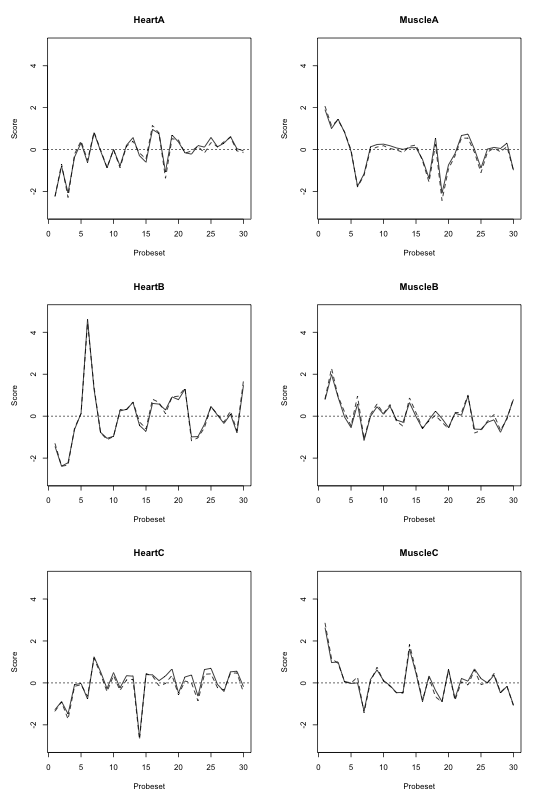

Replicate: FIRMA when using RLM and median polish
Author: Mark Robinson
Created on: 2009-03-28
Last updated: 2009-10-21
Christian Stratowa had been asking some questions about whether FIRMA (Purdom, Simpson, Robinson, Conboy, Lapuk, and Speed, 2008) could be used with median polish estimates (as opposed to the current standard of using affyPLM -- robust linear model -- estimates). He has written some test code to implement FIRMA based on either and compared the results. I have shared his code (tidied up by Henrik Bengtsson) and results below:
firma <- function(m, method=c("rlm", "mdp")) {
## function to compute FIRMA scores (adapted from aroma.affymetrix)
## m: dataframe containing normalized probe intensities (linear
scale)
## with 1.column containing the transcript_cluster_id
## and 2. column containing the corresponding probeset_ids
## method: fitting model, one of "rlm" or "mdp"
require("matrixStats") || throw("Package not loaded: matrixStats")
# Argument 'method':
method <- match.arg(method)
## convert expression levels to log2
y <- as.matrix(log2(m[,3:ncol(m)]))
## dimensions
K <- nrow(y) # number of probes
I <- ncol(y) # number of arrays
## fit log-additive model
if (method == "rlm") {
fit <- .Call("R_rlm_rma_default_model", y, 0, 1.345,
PACKAGE="preprocessCore")
} else if (method == "mdp") {
mp <- medpolish(y, trace.iter=FALSE)
fit <- list(Estimates = c(mp$overall + mp$col, mp$row),
StdErrors = rep(0, length(c(mp$row, mp$col))))
} # if
## extract parameters
est <- fit$Estimates
se <- fit$StdErrors
## chip effects
beta <- est[1:I]
## probe affinities
if (K == 1) {
## if only one probe must have affinity=1 since sum constraint
alpha <- 0
} else {
## affinities sum to zero (on log scale)
alpha <- est[(I+1):length(est)]
alpha[length(alpha)] <- -sum(alpha[1:(length(alpha)-1)])
} # if
## estimates on the intensity scale
theta <- 2\^beta
phi <- 2\^alpha
## calculate residuals
phi <- matrix(phi, nrow=K, ncol=I, byrow=FALSE)
theta <- matrix(theta, nrow=K, ncol=I, byrow=TRUE)
yhat <- phi*theta
eps <- (2\^y) / yhat # RMA uses y/yhat
## estimate of standard error
z <- log2(eps)
z <- unlist(z, use.names=FALSE)
u.mad <- mad(z, center=0)
## get probeset_ids
id <- unique(m[,2])
## FIRMA scores
fs <- sapply(id, function(unitName) {
rr <- which(m[,2] == unitName)
z <- eps[rr,,drop=FALSE]
z <- log2(z) / u.mad
colMedians(z)
})
fs <- t(fs)
rownames(fs) <- id
fs
} # firma()
Then the following commands will give the image below.
library("preprocessCore")
score.mdp <- firma(unr, "mdp")
score.rml <- firma(unr, "rlm")
par(pty="m", mfcol=c(3,2), mar=c(5,5,4,2))
for (ii in 1:6) {
plot(score.rml[,ii], type="l", ylim=c(-3,5),
main=colnames(score.rml)[ii], xlab="Probeset", ylab="Score")
abline(h=0, lty=3)
lines(score.mdp[,ii], lty=2)
}

Figure: FIRMA scores for 30 probesets when using RLM (solid) and median polish (dashed) estimators to fit the FIRMA model.
References
[1] E. Purdom, K. M. Simpson, M. D. Robinson, et al. "FIRMA: a method for detection of alternative splicing from exon array data". Eng. In: Bioinformatics (Oxford, England) 24.15 (Aug. 2008), pp. 1707-14. ISSN: 1367-4811. DOI: 10.1093/bioinformatics/btn284. PMID: 18573797.
[2] H. Bengtsson, P. Wirapati and T. P. Speed. "A single-array preprocessing method for estimating full-resolution raw copy numbers from all Affymetrix genotyping arrays including GenomeWideSNP 5 & 6". Eng. In: Bioinformatics (Oxford, England) 25.17 (Sep. 2009), pp. 2149-56. ISSN: 1367-4811. DOI: 10.1093/bioinformatics/btp371. PMID: 19535535.